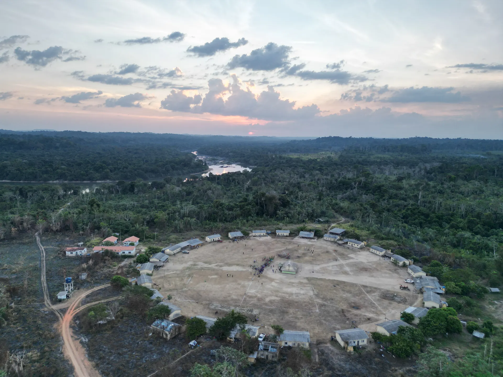
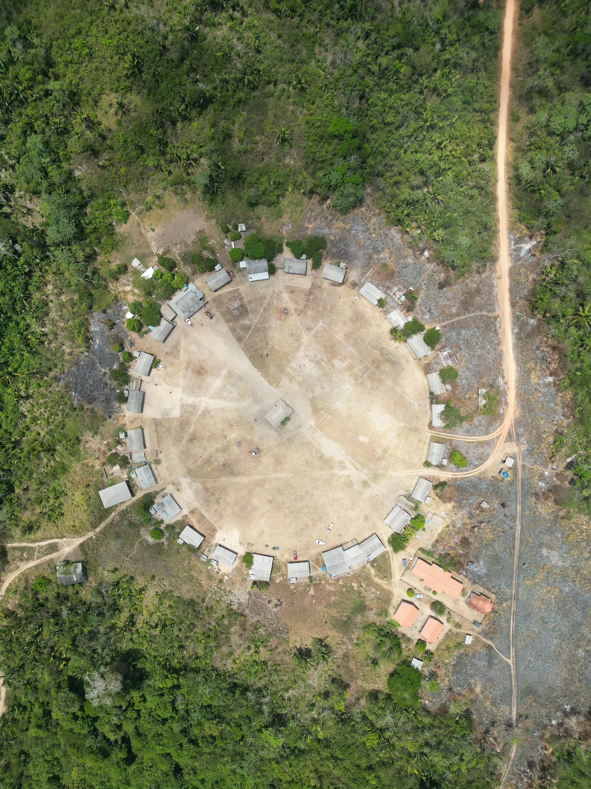

Território
Restaura Amazônia
Floresta voltando a crescer, com agroflorestas e brigadas Xikrin.
Conheça o projeto
Somos a Associação Indígena Berê Xikrin. Desde 2018 defendemos nosso território, nossa cultura e o futuro das 16 aldeias do Rio Bacajá.
Aldeia na TI Trincheira-Bacajá, set/2026 · Foto: Ousadia Marketing para a Associação Berê Xikrin
Nos autodenominamos Mẽbêngôkre, “gente do buraco d’água ou gente da água grande”. Vivemos em aldeias circulares, e no centro de cada uma fica a Ngàb, a Casa do Guerreiro, onde nos reunimos para decidir nosso futuro.
“Proteger e defender a floresta é cuidar da nossa casa e preservar nossa vida.”Associação Indígena Berê Xikrin

Floresta voltando a crescer, com agroflorestas e brigadas Xikrin.
Conheça o projeto
A Ngàb no centro da aldeia, onde decidimos, celebramos e aprendemos com os anciões.
Conheça o projeto
Jovens Xikrin registrando os peixes para acompanhar as mudanças no rio.
Conheça o projetoViver com a floresta, junto à floresta e para a floresta.
Todos saem de um padrão do logo. Cada um aparece na passagem do claro para o escuro e do escuro para o claro: em urucum sobre palha e em pequi sobre jenipapo. Escolha um como padrão; um segundo pode entrar só em momentos especiais.
De onde vem: a faixa vermelha com zigue-zague e triângulos dentro do “R” de Berê. Melhor uso: a mais marcante. Ótima como assinatura entre as seções principais da home.
De onde vem: os quadrados concêntricos da metade de baixo do selo, ligados por um traço. Melhor uso: páginas institucionais (Sobre, Transparência). É a mais sóbria das cinco.
De onde vem: as flechas que atravessam o selo, reduzidas a pontas duplas. Melhor uso: passagem que conduz a uma ação, como antes de “Apoie” ou de “Projetos”.
De onde vem: as listras diagonais em V do centro do selo, presas entre duas linhas. Melhor uso: seções de Cultura e Território. Lembra a pintura de traço fino.
De onde vem: os triângulos da faixa geométrica e do “R”, um para cima e um para baixo. Melhor uso: rodapé e fechamento de páginas. Tem bastante presença sem pesar.
Três cores carregam a marca. As outras três aparecem uma por vez, como acento. Todo texto respeita o contraste mínimo AA.
Mẽbêngôkre Unbounded 700 · título de página
Nossa terra, nosso futuro Unbounded 700 · título de seção
Kukradjà · Ngàb · Kubengêt Unbounded 600 · título de card
Be Vietnam Pro no texto corrido, 17 px, entrelinha 1,65. As duas fontes têm o “ẽ” de Mẽbêngôkre, o que muitas fontes de título não têm. Be Vietnam Pro 400 · corpo
Cada grafismo vem de um padrão do selo ou do nome Berê Xikrin. São vetores leves, tingidos com qualquer cor da paleta. Validados pela Associação em 13/10/2026.
Base do hero e topo do rodapé. Junta o triângulo e o quadrado do logo.
Do “R” vermelho do nome. Divisor fino e topo dos cards.
Da base do selo. Divisor entre blocos de conteúdo.
Do centro do selo. Textura de fundo a 6% sobre o escuro.